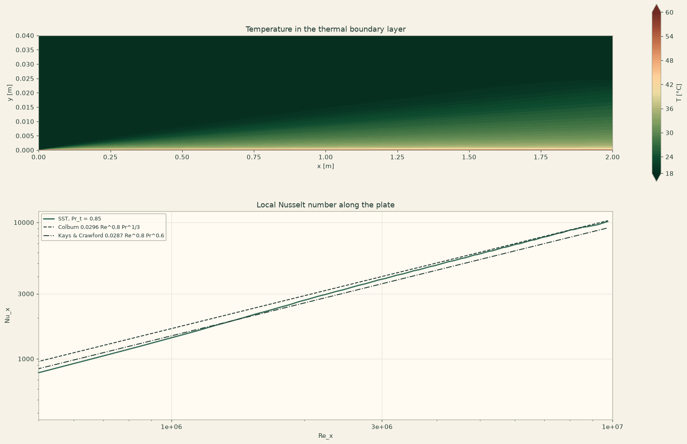
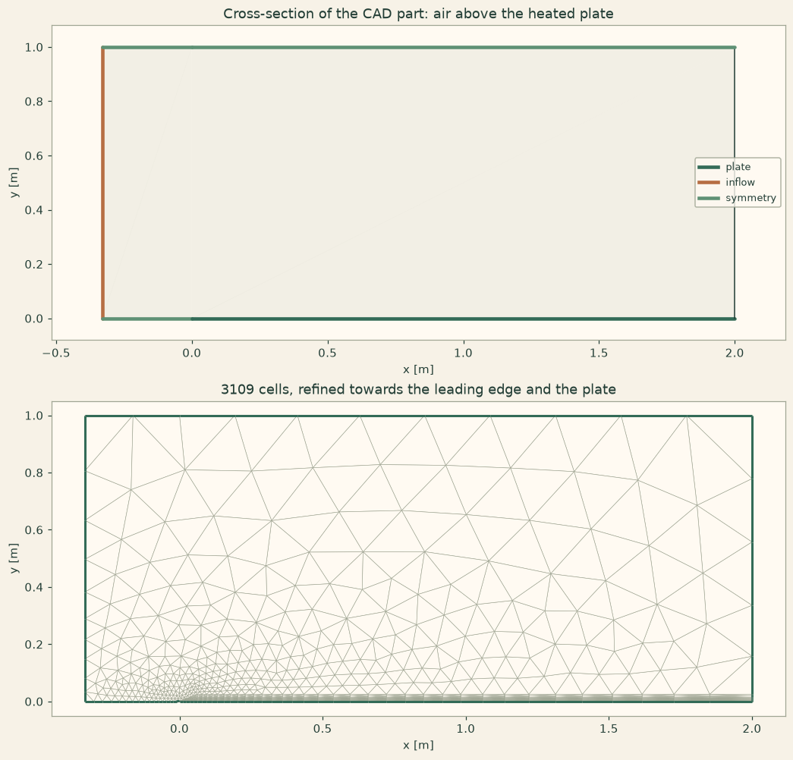

Docs › Examples › Turbulent heat transfer from a heated flat plate
Turbulent heat transfer · 2D
Turbulent heat transfer from a heated flat plate
Air at 75 m/s flows along a 2 m flat plate held 40 K above the stream: the turbulent boundary layer carries the heat away, and the local Nusselt number grows with the 0.8th power of the Reynolds number.
Run locally with OneSimulation. The example downloads are free. Running them requires an activated runtime. Runtime Alpha 0.2.1a7 · CPython 3.13 on macOS (Apple Silicon), Ubuntu 22.04 (x86-64), and Windows x64. Installation and activation · View pilot plans. Scope of the reference checks.

What it computes
The air above the plate is read from a STEP file and cut to its cross-section; OneSimulation solves the steady Reynolds-averaged Navier-Stokes equations with the k-omega SST model down to the wall, then the temperature with quadratic elements, taking the velocity and the turbulent diffusivity nu_t/Pr_t (Pr_t = 0.85) from the solved flow through field couplings. The script that builds the STEP file comes with the notebook.
What it checks
Beyond Re_x = 4.8 million the local Nusselt number follows the Colburn analogy 0.0296 Re_x^0.8 Pr^1/3 within 2.2 % (-2.2 % at x = 0.97 m, -0.7 % at 1.5 m, -1.9 % at 1.9 m) and lies 10 to 12 % above the Kays-Crawford gas correlation; the Reynolds-analogy factor St Pr^2/3 / (c_f/2) stays between 0.95 and 1.01.
Geometry
The notebook starts at the import of the CAD file turbulent_flat_plate_heat_transfer.step: STEP (AP242), readable by any CAD program, with the names of the faces that the boundary conditions use. Put it next to the notebook.

The geometry script
The script turbulent_flat_plate_heat_transfer_geometry.py builds the geometry with the CAD objects of OneSimulation and writes the file. Change a dimension there, run it, and run the notebook again.
"""Geometry of the OneSimulation example "Turbulent heat transfer from a flat plate".
Builds the air above a flat plate as a slab 0.05 m thick with the CAD objects of OneSimulation and
writes turbulent_flat_plate_heat_transfer.step. The plate is 2 m long and starts at x = 0;
the stream enters 0.33 m upstream of its leading edge, the far field lies 1 m above it. The faces
are named for the example: inflow, outflow, top, lead (the symmetry plane ahead of the plate),
plate (heated), and the two span faces sides. The example computes on the cross-section z = 0.025 m.
"""
from onesim.cad.d3 import Box
lead = Box(length=0.33, width=1.0, height=0.05, origin=(-0.33, 0.0, 0.0))
plate = Box(length=2.0, width=1.0, height=0.05, origin=(0.0, 0.0, 0.0))
air = lead | plate
bottom = lambda face: face.kind == "plane" and abs(face.center[1]) < 1e-9
air = air.grouped(
inflow=air.select(
faces=lambda face: face.kind == "plane" and abs(face.center[0] + 0.33) < 1e-9
),
outflow=air.select(
faces=lambda face: face.kind == "plane" and abs(face.center[0] - 2.0) < 1e-9
),
top=air.select(
faces=lambda face: face.kind == "plane" and abs(face.center[1] - 1.0) < 1e-9
),
lead=air.select(faces=lambda face: bottom(face) and face.center[0] < 0),
plate=air.select(faces=lambda face: bottom(face) and face.center[0] > 0),
sides=air.select(
faces=lambda face: face.kind == "plane"
and (abs(face.center[2]) < 1e-9 or abs(face.center[2] - 0.05) < 1e-9)
),
)
air.save("turbulent_flat_plate_heat_transfer.step")The notebook
The complete notebook, cell by cell. Run it to produce the figures and the comparison printout.
A uniform stream of air flows along a flat plate whose surface is kept at a temperature \(T_w\) above the stream temperature \(T_\infty\). Downstream of a short laminar start the boundary layer is turbulent; the heat it carries away from the plate is set by the turbulent mixing across the layer, so the local Nusselt number \(Nu_x=q_w x/(k(T_w-T_\infty))\) grows like \(Re_x^{0.8}\).
The flow obeys the Reynolds-averaged Navier-Stokes equations with the eddy viscosity \(\mu_t\) of Menter's shear-stress transport (SST) \(k\)-\(\omega\) model. The temperature, with constant properties a passive scalar, obeys
the Reynolds analogy for the turbulent heat flux. The heat model takes the velocity and the turbulent diffusivity from the solved flow through field couplings; EddyDiffusivity(prandtl=0.85) turns the eddy viscosity into \(\alpha_t=\mu_t/(\rho Pr_t)\).
| side | flow | heat | |---|---|---| | inflow | \(u=U=75\) m/s, intensity 0.04 %, \(\mu_t/\mu=0.009\) | \(T=T_\infty=293.15\) K | | plate | no slip, resolved viscous sublayer | \(T=T_w=333.15\) K | | lead, top | symmetry | insulated | | outflow | traction free | insulated |
Reference. For the turbulent flat plate with constant wall temperature the Colburn analogy gives \(Nu_x=0.0296\,Re_x^{0.8}Pr^{1/3}\) (F. P. Incropera et al., Fundamentals of Heat and Mass Transfer, 6th ed., eq. 7.36, \(0.6<Pr<60\), \(Re_x\le10^8\)), consistent with Schlichting's skin friction \(c_f=0.0592\,Re_x^{-1/5}\); Kays and Crawford give \(St\,Pr^{0.4}=0.0287\,Re_x^{-0.2}\) for gases (W. M. Kays, M. E. Crawford, Convective Heat and Mass Transfer, 3rd ed., eq. 13-14).
import numpy as np
from onesim.cad.exchange import load
from onesim.materials import NewtonianFluid, ThermalFluid
from onesim.meshing import BoundaryLayers, TriangularMesher
from onesim.numerics import Numerics
from onesim.numerics.fem import FiniteElement, GalerkinAdvection, Lagrange, TaylorHood
from onesim.numerics.field_transfer import FieldInterpolation
from onesim.numerics.linear import SparseDirect
from onesim.numerics.nonlinear import Newton
from onesim.physics.heat_transfer import (
ConvectiveHeatTransfer,
FixedTemperature,
HeatFlux,
)
from onesim.physics.hydrodynamics import (
EddyDiffusivity,
FixedVelocity,
FlowTraction,
FreeSlipLaw,
IncompressibleNavierStokes,
InflowTurbulence,
KOmegaSST,
NoSlipWall,
WallShear,
)
from onesim.simulation import Problem, Simulation
from onesim.simulation.field_connections import FieldCoupling
from onesim.visualization import plots, theme
theme.set()Geometry and mesh
The CAD part turbulent_flat_plate_heat_transfer.step (from turbulent_flat_plate_heat_transfer_geometry.py) is the air above the plate, a slab 0.05 m thick: the stream enters 0.33 m ahead of the leading edge, the far field lies 1 m above the plate. The example computes on its mid-plane. Thirty-two rows of flat cells line the plate, the first 5 µm high (\(y^+\approx0.3\)), growing by 25 % per row; the triangles are finest at the leading edge.
part = load("turbulent_flat_plate_heat_transfer.step")
section = part.section((0, 0, 1), origin=(0, 0, 0.025))
faces = section.boundaries
mesh = TriangularMesher(
target_size=0.24,
size_field=lambda p: np.clip(
0.008 + 0.06 * np.abs(p[:, 0]) + 0.2 * p[:, 1], 0.008, 0.24
),
boundary_layers=(
BoundaryLayers(walls=faces.plate, count=32, first_height=5e-6, growth=1.25),
),
).generate(section)
fig = plots.figure(layout=[["geometry"], ["mesh"]], size=(15, 9))
plots.geometry(
section,
selection={
"plate": faces.plate,
"inflow": faces.inflow,
"symmetry": faces.lead | faces.top,
},
labels=False,
title="Cross-section of the CAD part: air above the heated plate",
ax=fig["geometry"],
)
plots.mesh(
mesh,
groups=("all",),
legend=False,
title=f"{mesh.cell_count} cells, refined towards the leading edge and the plate",
ax=fig["mesh"],
)
plots.show()Turbulent flow
turbulence=KOmegaSST(...) adds \(k\), \(\omega\) and \(\mu_t\) to the incompressible Navier-Stokes equations; the steady state is reached by pseudo-time continuation and finished by Newton. The Reynolds number is five million per metre.
stream, density, viscosity = 75.0, 1.2, 1.8e-5
model = IncompressibleNavierStokes(
domain=section.domain(),
material=NewtonianFluid(density=density, dynamic_viscosity=viscosity),
turbulence=KOmegaSST(
inflow=InflowTurbulence(intensity=3.9e-4, viscosity_ratio=0.009)
),
)
problem = Problem(
name="Turbulent flat plate",
geometry=section,
physics=(model,),
boundary_conditions=(
FixedVelocity(boundary=faces.inflow, physics=model, value=(stream, 0.0)),
NoSlipWall(boundary=faces.plate, physics=model),
WallShear(boundary=faces.lead | faces.top, physics=model, law=FreeSlipLaw()),
FlowTraction(boundary=faces.outflow, physics=model, value=(0.0, 0.0)),
),
)
flow = Simulation(
problem=problem,
mesh=mesh,
numerics=Numerics(
spatial=FiniteElement(element=TaylorHood()),
initial_guess={model.velocity: (stream, 0.0)},
nonlinear_solver=Newton(
linear_solver=SparseDirect(), absolute_tolerance=1e-8, maximum_iterations=10
),
),
).solve_stationary()Heat transfer
The heat model gets the solved velocity and the turbulent diffusivity through two field couplings and is solved on the same mesh with quadratic elements.
cold, hot, prandtl = 293.15, 333.15, 0.71
air = ThermalFluid(
density=density,
dynamic_viscosity=viscosity,
specific_heat_capacity=1005.0,
thermal_conductivity=viscosity * 1005.0 / prandtl,
)
heat = ConvectiveHeatTransfer(domain=section.domain(), material=air, velocity=None)
heat_problem = Problem(
name="Heated flat plate",
geometry=section,
physics=(heat,),
boundary_conditions=(
FixedTemperature(boundary=faces.inflow, physics=heat, value=cold),
FixedTemperature(boundary=faces.plate, physics=heat, value=hot),
HeatFlux(
boundary=faces.lead | faces.top | faces.outflow, physics=heat, value=0.0
),
),
couplings=(
FieldCoupling(
source=flow.field(model.velocity),
target=heat.advecting_velocity,
transfer=FieldInterpolation(),
),
FieldCoupling(
source=flow.field(model.eddy_viscosity),
target=heat.eddy_diffusivity,
transfer=EddyDiffusivity(prandtl=0.85),
),
),
)
temperature = (
Simulation(
problem=heat_problem,
mesh=mesh,
numerics=Numerics(
spatial=FiniteElement(
element=Lagrange(order=2), convection=GalerkinAdvection()
),
linear_solver=SparseDirect(),
),
)
.solve_stationary()
.field(heat.temperature)
)Results
The wall heat flux is read from the temperature 0.2 µm above the plate, inside the conductive sublayer: \(q_w=k\,(T_w-T(y))/y\); the skin friction likewise from the velocity.
x = np.linspace(0.05, 1.95, 96)
reynolds = stream * density * x / viscosity
gap = 2e-7
nusselt = (
(hot - temperature.evaluate(np.column_stack((x, np.full_like(x, gap)))))
/ gap
* x
/ (hot - cold)
)
friction = (
2
* viscosity
* flow.field(model.velocity).evaluate(np.column_stack((x, np.full_like(x, gap))))[
:, 0
]
/ gap
/ (density * stream**2)
)
colburn = 0.0296 * reynolds**0.8 * prandtl ** (1 / 3)
kays = 0.0287 * reynolds**0.8 * prandtl**0.6
print(
" x [m] Re_x Nu_x Colburn Kays-Crawford c_f·10³ Schlichting St·Pr^(2/3) / (c_f/2)"
)
for position in (0.25, 0.5, 0.97, 1.5, 1.9):
n, c = np.interp(position, x, nusselt), np.interp(position, x, friction)
r = stream * density * position / viscosity
print(
f"{position:6.2f} {r:10.3g} {n:9.0f} {0.0296 * r**0.8 * prandtl ** (1 / 3):9.0f} ({100 * (n / (0.0296 * r**0.8 * prandtl ** (1 / 3)) - 1):+5.1f} %)"
f" {0.0287 * r**0.8 * prandtl**0.6:7.0f} ({100 * (n / (0.0287 * r**0.8 * prandtl**0.6) - 1):+5.1f} %)"
f" {1e3 * c:8.3f} {1e3 * 0.0592 * r**-0.2:8.3f} {n / (r * prandtl ** (1 / 3)) / (c / 2):10.3f}"
)Figure
Temperature in the boundary layer along the plate, and the local Nusselt number with the correlations.
fig = plots.figure(layout=[["temperature"], ["nusselt"]], size=(15, 10))
plots.surface(
temperature,
component=lambda value, position: value - 273.15,
xlimits=(0.0, 2.0),
ylimits=(0.0, 0.04),
aspect=10,
label="T [°C]",
title="Temperature in the thermal boundary layer",
ax=fig["temperature"],
)
plots.line(
y={"SST, Pr_t = 0.85": (reynolds, nusselt)},
reference={
"Colburn 0.0296 Re^0.8 Pr^1/3": (reynolds, colburn),
"Kays & Crawford 0.0287 Re^0.8 Pr^0.6": (reynolds, kays),
},
xlabel="Re_x",
ylabel="Nu_x",
scale="loglog",
xlimits=(5e5, 1e7),
title="Local Nusselt number along the plate",
ax=fig["nusselt"],
)
plots.show()Going further
EddyDiffusivity(prandtl=...) sets the turbulent Prandtl number; the same coupling into SpeciesTransport(...).eddy_diffusivity gives turbulent mass transfer with a turbulent Schmidt number. A HeatFlux on the plate instead of the fixed temperature gives the constant-flux case.